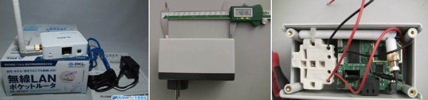

We are
an NGO defending the
freedom of information since 1985
We have
- Consultative status with UNESCO
- A network of local partners NGOs
- 150 correspondants in 130 countries
- Informal on-the-ground contacts (activists, members of civil society, etc)
We do
- Monitoring of online free speech and cybercensorship, Wolrd Press Freedom Index, press releases
- Advocacy for jailed or harassed bloggers and online media outlet under pressure
- Financial, judicial and material assistance to netizens and their families or online media outlets in need and training in digital / physical safety
Digital Safety?
You should truly care. The NYT has been the target of "maybe chinese" hackers towards the end of 2012. If the Gray Lady and her 1200 journalists couldn't protect herself, how can you?
In the wake of this year’s disclosure, it should be clear that unencrypted journalist-source communication is unforgivably recklessE. Snowden quoted by the New-York Times in How Laura Poitras Helped Snowden Spill His Secrets
The Basics
The most destructive virus sits between the keyboard and the chair
Avoid prying eyes
- Don't sit with your back to the window
- Use screen protection filters
- Never leave your computer or device far from sight
- If you have to do so, put a personal marker on it
- Update your OS and other softwares
- Use an antivirus, ClamXav, ClamTk, Avast, MSE, Mc Afee , Norton with updated definitions
- Set up and activate your Firewall
- Lock your session
- Encrypt your hardrive using PGP, BitLocker, TrueCrypt, FileVault
Passphrases.
Forget about password. Use Passphrases.

If you need some help, use password manager such as lastpass or onepassword.
Traces left on your computer
Even if you close your session *, there are many traces left on your computer that can lead to your data
* On your any computer, never forget to close your Gmail, Facebook, Twitter Wordpress, Blogger, whatever session.
Erase
- any stored passwords and username
- your surfing history and cookies
- Use private browsing
- and a lot of different tips : privacy options, secure delete, etc.
- Even better: use a live OS such as Tails
I can read your email
To avoid interception, use
- https: encrypts your web browsing when available on the visited website
- Tor bundle: anonymise your web browsing. Anonymisation is NOT encryption
- VPN: encrypts every network connection coming from your device
Spyphones
A smartphone is a computer. Everything already mentionned is also true for a spyphone smartphone. Use a dumbphone instead. Or have a look at the Guardian Project, Redphone, Silence Circle, etc.
Image by In 30 Minutes guides under CC 2.0 licence

Active communication
- Lawfull interception
- GSM is not very much secured. Rainbow table + a bit of radio hardware = encryption cracked for less than $500
Device in standby mode
A lot of softwares can turn a cellphone into a microphone bug. However, it has to be installed on the cellphone
Device off
The battery is still providing power to the cell phone. With the help of the telephone operator, who can access the Application Protocol Data Unit (packets sent to the SIM card), it can still be activated.
Battery removed
No battery, no power, no signal, no spying.
In my fridge ← Snowden
Note : you can't remove your iPhone battery

Let's get in touch
- Jean-Marc Bourguignon
fo0@werebuild.net // @fo0_ - Grégoire Pouget
gregoire@rsf.org // GPG ID: 2BBC1ECE // @fightcensors_en // @barbayellow